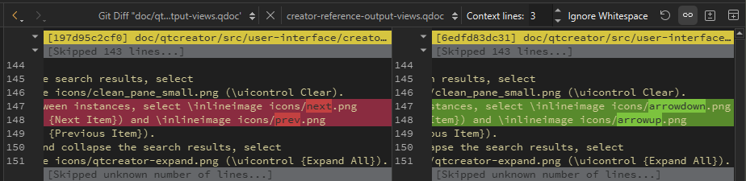
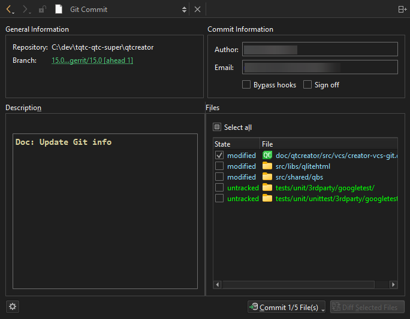

Commit your first change
When working with Git, you typically check and stage you local changes, commit them to the local repository, and then push them to a remote repository (origin).
Before you start, set up Git in Preferences > Version Control > General.
Commit to a new repository
To commit and push your first change to a new repository:
- To start tracking changes, go to Tools > Git, and then select Create Repository.
- To view local changes, go to Tools > Git > Local Repository and select Diff.

Git Diff Repository view
- Right-click a changed line and select Stage Chunk to add the chunk to the staging area or Stage Selection to add the selected lines there.
- To commit the staged changes to the local repository, go to Tools > Git > Local Repository and select Commit.

Git Commit view
- Select the files to commit, and then select Commit <n/m> File(s) to commit the changes to the local repository.
- To push the committed changes to a remote repository, go to Tools > Git > Remote Repository and select Push.
If the local branch does not have an upstream branch in the remote repository, Qt Creator prompts you to create it and set it as origin.
Commit to an existing repository
To commit and push your first change to an existing repository:
- To pull changes from a remote repository, go to Tools > Git > Remote Repository and select Pull.
- Select Stash & Pop to stash all local changes before pulling and to apply your stash on top of the pulled working tree state.
- To commit the changes to the local repository, go to Tools > Git > Local Repository and select Commit.
- To push the committed changes to a remote repository, go to Tools > Git > Remote Repository and select Push.
See also How To: Use Git and Git.